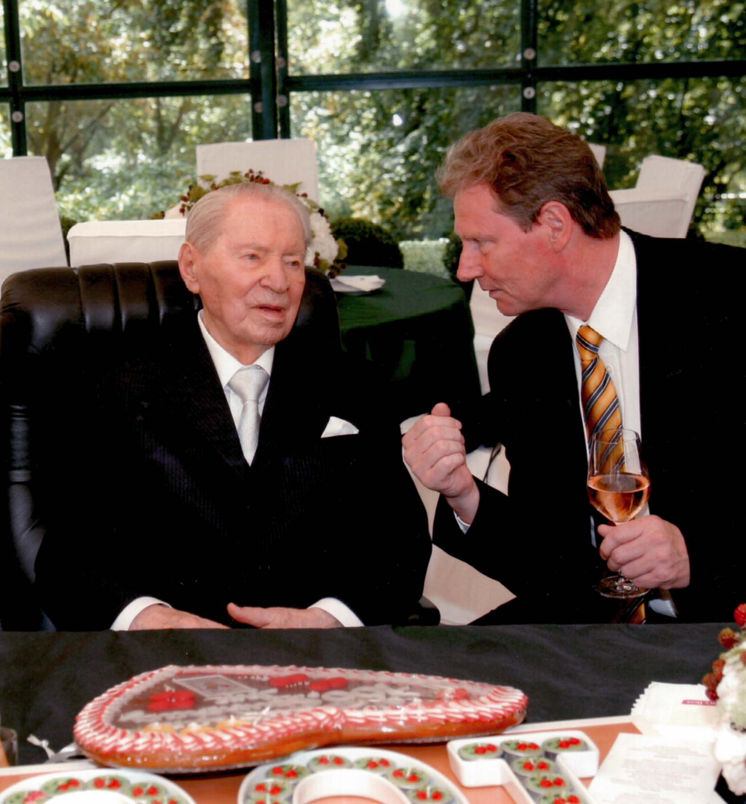

Nur wenigen Menschen ist vergönnt, ihren hundertsten Geburtstag zu feiern. Werner Otto gehörte zu ihnen.
Werner Otto stammte aus Seelow in Brandenburg. Weil er sich den Nationalsozialisten widersetzte, verbrachte er zwei Jahre im Gefängnis. Nach dem Krieg begann er zunächst mit einem kleinen Zigarrenladen, später scheiterte seine erste Schuhfabrik. Doch er gab nicht auf. Aus einem Versandhandel in Hamburg entstand schließlich einer der erfolgreichsten Handelskonzerne Deutschlands und der größte Versandhandel der Welt.
Viele seiner späteren Wettbewerber verschwanden irgendwann vom Markt. Otto dagegen entwickelte sich über Jahrzehnte erfolgreich weiter. Seine Frau Maren erzählte mir einmal, worin seiner Meinung nach das Geheimnis lag. Werner habe sich nie auf seinen Erfolgen ausgeruht. Freitags sei er oft mit mehreren Aktenordnern nach Hause gekommen und habe gesagt: „Endlich kann ich in Ruhe arbeiten.“
Mit sechzig Jahren wollte er eigentlich in den Ruhestand gehen. Er hatte die Verantwortung an seine Kinder übergeben und zog mit Maren nach Garmisch-Partenkirchen. Doch schon nach kurzer Zeit wurde ihm das Nichtstun zu langweilig. Während einer Reise nach Kanada entdeckte er moderne Einkaufszentren und erkannte sofort deren wirtschaftliches Potenzial. Also gründete er mit sechzig Jahren ein völlig neues Unternehmen. Daraus entstand die ECE-Gruppe, die heute einen großen Teil der innerstädtischen Einkaufszentren in Deutschland betreibt.
Auch damit gab er sich nicht zufrieden. Als New York unter hoher Kriminalität litt und die Immobilienpreise am Boden lagen, investierte er dort in großem Stil. Aus diesen Investitionen entwickelte sich später die Paramount Group.
Mich hat diese Lebensgeschichte tief beeindruckt. Nicht nur wegen ihres wirtschaftlichen Erfolges, sondern weil sie zeigte, dass ein Mensch auch mit sechzig Jahren noch einmal völlig neu anfangen kann. Vielleicht gefiel mir das auch deshalb so gut, weil ich selbst erst spät nach Berlin gegangen war und dort noch einmal etwas völlig Neues aufgebaut hatte.
Ich bin Werner Otto mehrfach persönlich begegnet. Einmal trafen wir uns bei Kaffee und Kuchen im sogenannten Wohnzimmer der Familie Otto. Wobei „Wohnzimmer“ das falsche Wort ist. Wer hat schon mehrere originale Brueghel-Gemälde an den Wänden hängen? Werner Otto war damals bereits hochbetagt. Das Sprechen fiel ihm schwer, aber geistig war er hellwach. Als wir über die geplante Maren-Otto-Kinderklinik sprachen, fand er die Idee großartig und unterstützte sie von ganzem Herzen.

Ein ganz besonderes Erlebnis war sein hundertster Geburtstag. Gefeiert wurde auf dem Anwesen der Familie Otto. Für diesen Anlass hatte Maren Otto auf dem See hinter dem Haus eigens eine schwimmende Bühne errichten lassen. Sie wollte ihrem Mann eine Überraschung bereiten, die er niemals vergessen würde.
An Gästen war nahezu alles vertreten, was in Berlin Rang und Namen hatte. Bundeskanzlerin Angela Merkel war gekommen, ebenso Bundespräsident Horst Köhler, Brandenburgs Ministerpräsident Matthias Platzeck und der Regierende Bürgermeister Klaus Wowereit. Dazu viele persönliche Freunde der Familie, unter anderem Wilhelm Wieben, Dagmar Berghoff, die Produzentin Regine Ziegler sowie die gesamte Familie Otto mit Kindern, Enkeln und Urenkeln.
Ich hatte Gelegenheit, Werner Otto kurz zu gratulieren und noch einmal mit ihm über unsere geplante Kinderklinik zu sprechen. Das Gespräch dauerte nicht lange, weil ihm das Sprechen inzwischen schwerfiel. Aber ich spürte deutlich, wie sehr ihm dieses Projekt am Herzen lag. Am Nachmittag kam schließlich die große Überraschung.
Werner Ottos Lieblingsmusiker war André Rieu.
Plötzlich erschien das gesamte Johann-Strauß-Orchester mit Chor. Fünfzig oder vielleicht sogar achtzig Musiker, alle in historischen Kostümen, betraten die schwimmende Bühne. Wenig später dirigierte André Rieu persönlich ein vollständiges Konzert – nicht vor zehntausenden Zuschauern in einer Arena, sondern ausschließlich für Werner Otto und seine Gäste.
Ich stand dort, schaute auf den See und war für einen Moment mit meinen Gedanken woanders. Wie um alles in der Welt war der kleine Lothar vom Hunsrück hier bloß gelandet? Zwischen Bundespräsident, Bundeskanzlerin, der Familie Otto und André Rieu auf einer privaten Geburtstagsfeier.
Es fühlte sich an wie ein Traum. Nur war es keiner. Es war die Wirklichkeit.